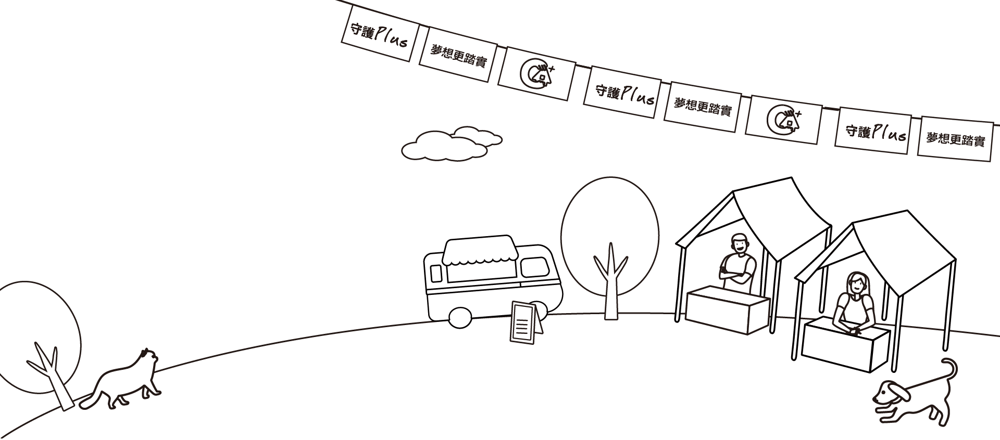

合庫人壽攜手中華民國家庭照顧者關懷總會邁入第8年，一起陪伴並支持照顧者，守護照顧者的工作、夢想跟愛情
公益歌手
黃品源
黃品源
很多照顧者，因為照顧被迫犧牲他們的工作、夢想以及愛情，讓我們一起用行動來守護他們，讓他們獲得更多的幫助！
公益歌手
林曉培
林曉培
不要獨自承受，讓我們一起面對，加油!
公益歌手
張秀卿
張秀卿
你守護家人，是不是忘了也要照顧自己? 我們都是人，需要適時的放鬆跟喘息，才能讓自己恢復活力，善用長照資源跟喘息咖啡，好面對每天的挑戰，多利用喘息服務，讓自己獲得喘息的空間，不讓照顧壓垮自己。
公益藝人
唐從聖
唐從聖
照顧病人真的不容易，你們的辛苦我明白也親身經歷，我們一起加油!
公益歌手
張芸京
張芸京
我們每一個人，都需要先照顧好自己的心，才能更多的去照顧別人。把自己的那顆心，好好的修復、平靜下來。用愛去填滿它，才能更健康的去給予愛。
公益歌手
賴銘偉
賴銘偉
辛苦一陣子，不會辛苦ㄧ輩子。生命會疼惜真心付出的人。為所有正在照顧失能家人的照顧者加油。

公益歌手
卓義峯
卓義峯
照顧者的辛苦我們很難體會，但你的一點點力量，就可以幫助他們，一起用行動支持照顧者。
公益歌手
品冠
品冠
長期照顧並不一件容易的事，需要思考的層面也很多，像是要怎麼聘請看護，或是如何申請補助、可以申請哪些補助、要在家照顧，還是送安養機構等等，這些問題都需要考量。希望照顧者能更快的找到機關團體諮詢，並得到長照的資源，讓我們一起用行動捐款支持這群很少被社會看見，卻承受極大壓力的照顧者。
公益歌手
曾沛慈
曾沛慈
謝謝一直以來照顧著的你們，真的很不容易很不容易，所以當你們也需要被照顧的時候，一定要讓身邊的人知道好嗎？辛苦了！
公益歌手
蕭煌奇
蕭煌奇
很能體會我的家人跟朋友的辛苦，也希望鼓勵照顧者或是被照顧的人，都能保持勇於追夢的動力。
公益歌手
賴雅妍
賴雅妍
希望大家更認識在職照顧者，用心去理解照顧者的壓力，讓他們知道自己並不孤單！看到照顧咖啡館的理念時，有咖啡師執照的雅妍也相當支持，自己無法抗拒咖啡的魔力，當自己需要清醒或沉澱時，總是想來一杯，也邀請照顧者們，不妨到照顧咖啡館坐坐，喘口氣，換個環境，轉個心情，再出發！
公益歌手
彭佳慧
彭佳慧
大家都知道出入病房有必要性跟危險性，我當時是昏迷的；我想被照顧者當下是沒多大的感受，但我相信照顧的人一定身心煎熬。長期面對病人，照顧者一定會失去笑容跟正能量，我覺得這個機構很好，一直給這些人力量跟正能量，所以很支持。
音樂製作人
陳建寧
陳建寧
我自己也曾經照顧過中風的父親，對於那種心力交瘁的照顧生活，我很能體會，鼓勵所有的照顧者，勇敢尋求幫助，讓自己有喘息的空間，不要被照顧壓垮！
家總理事長
郭慈安
郭慈安
照顧家人不是一個人的責任，希望照顧者可以走出來，讓我們一起來走過照顧這條漫長的路。照顧家人的同時也有追求夢想的權利，請照顧者勇敢愛、放手做，有家總在，不孤單。
合庫人壽總經理
沈玫君
沈玫君
合作金庫人壽與中華民國家庭照顧者關懷總會自105年起，在全國設立「照顧咖啡館」，推出免費「喘息咖啡」，讓照顧者們除了在這裡喝杯咖啡喘口氣外，還可以交換彼此照顧經驗，傳遞長期照顧資訊與資源。